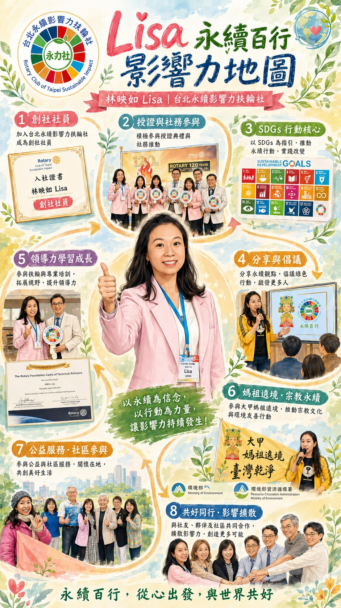

永續不是口號，是生活選擇。
影響力不是宣傳，是示範。
在永力社的實體例會中，有一個畫面幾乎從不缺席。Lisa 的包裡，永遠備著：
例會餐敘結束後，只要現場還有剩食，她總是默默起身打包。她不讓任何可食用的食物被丟棄。
沒有宣講，沒有責備，沒有要求。但慢慢地，社友開始跟著她做。有人開始自備餐具。有人開始詢問：「今天有沒有需要打包？」有人開始重新思考「剩食」這件事。
它靠的是——穩定、安靜、持續的行動示範。
Lisa 並不是因為扶輪社才開始談永續。她長期投入企業永續教育、ESG 倡議與環境行動推廣，熟悉永續報告書邏輯、循環經濟思維與行為改變策略。
但她很清楚：如果永續只停留在企業報告書，那它只影響會議室。
一次性紙碗、紙杯、免洗筷、保特瓶，以及大量未被珍惜的福食，在九天八夜的宗教盛典後堆積如山。這成為 Lisa 行動的起點。
在永力社支持下，Lisa 全力主持「零廢敬媽祖」服務計畫。這不是簡單的環保倡議，而是一場跨場域協調工程。
她與大甲鎮瀾宮、當地商圈、夜市攤商、環保志工團隊、民間組織反覆協商、溝通、說明。目標只有一個：
讓信仰盛典，也能成為永續行動場域。
具體行動包括：
這些都不是單點倡議，而是行為設計。
轉型從來不輕鬆。在遶境文化中：便利是基本期待；發放福食是善心象徵；一次性餐具是效率選擇。
當 Lisa 提出減量、循環與洗滌概念時，她面對的不是理念反對，而是——習慣。
但她沒有批判。她選擇溫柔地說明：
「不是反對善心，而是希望善心不要留下負擔。」
她理解商家的壓力。理解廟方的顧慮。理解疫情後的衛生焦慮。於是她做的不是對抗，而是設計替代方案。
TVBS 專題採訪報導中，她清楚指出：每年遶境結束後，需要動用近千位環保志工清掃。如果源頭減量，那將是更深層的改變。
這個倡議，開始被更多人看見。更重要的是——永力社內部，也因為她的行動，開始思考：我們是不是也應該把永續做得更徹底？
如果說創社社長是系統設計者，那 Lisa 是文化實踐者。
她讓永力社的「永續」不只存在於報告書章節，而存在於餐桌、街道、遶境路線與信仰場域。
真正的影響力，不一定來自權力位置。它來自持續行動。
Lisa 的影響力，不是轟動式改革。
而是——每天帶著餐盒出門。每次例會不讓剩食浪費。每場遶境不讓垃圾成為必然。
她把永續，活成一種習慣。
而這種習慣，正在慢慢改變更多人的選擇。